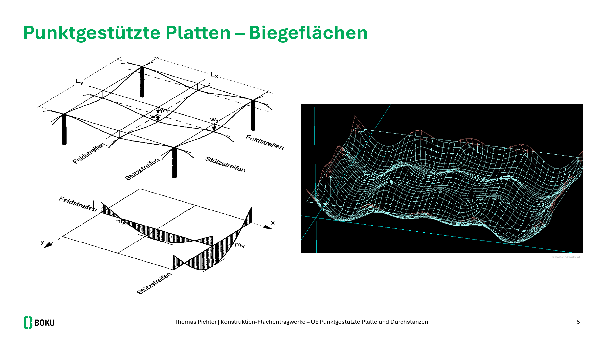
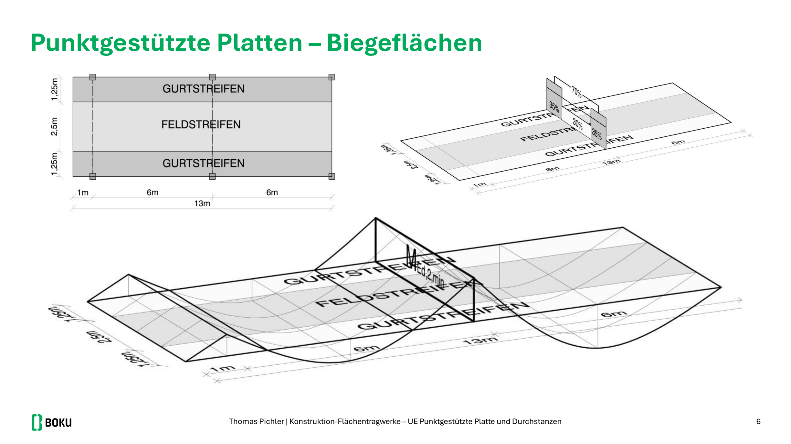
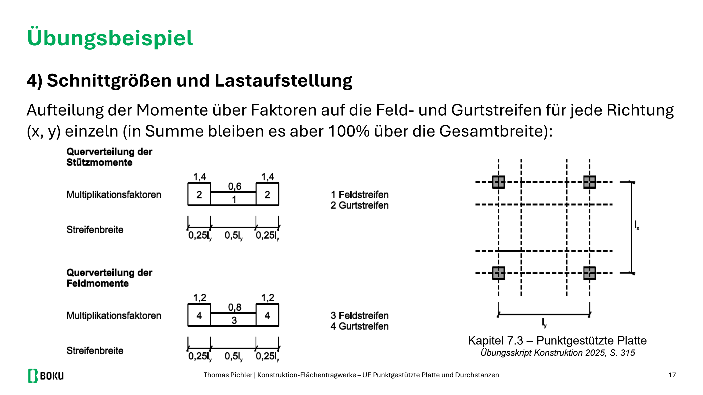
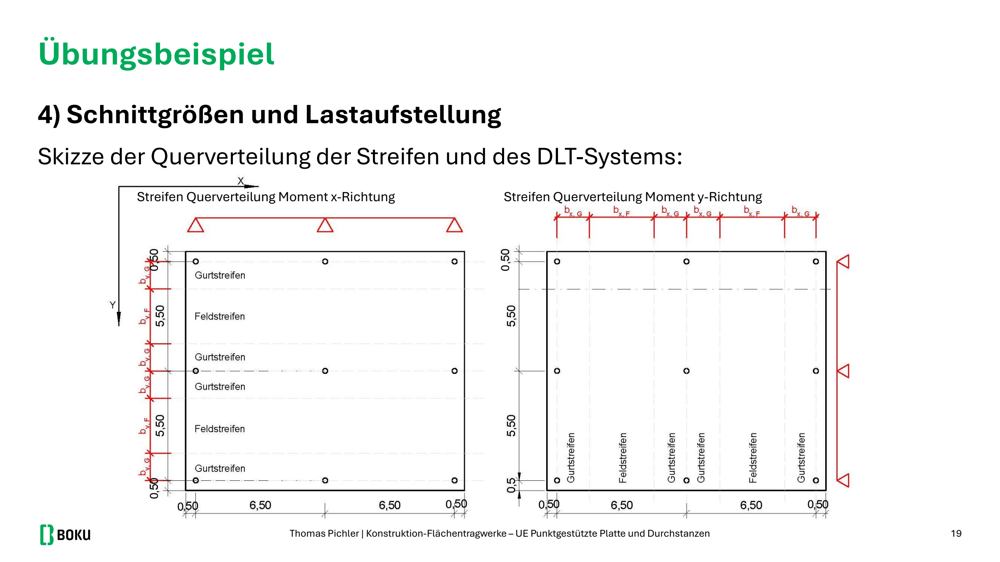
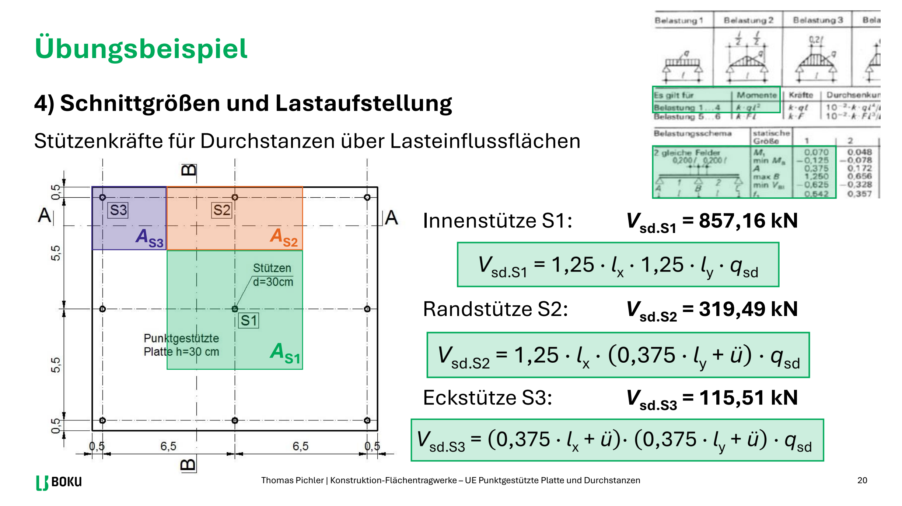
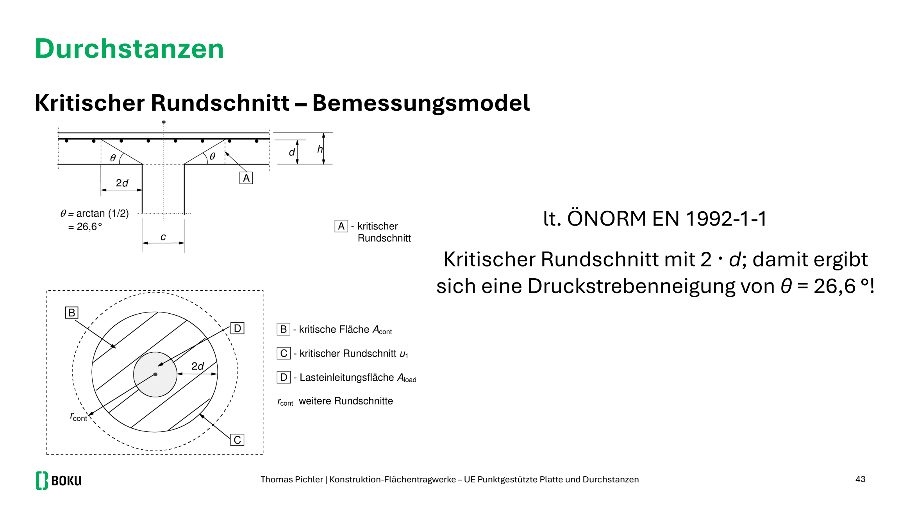
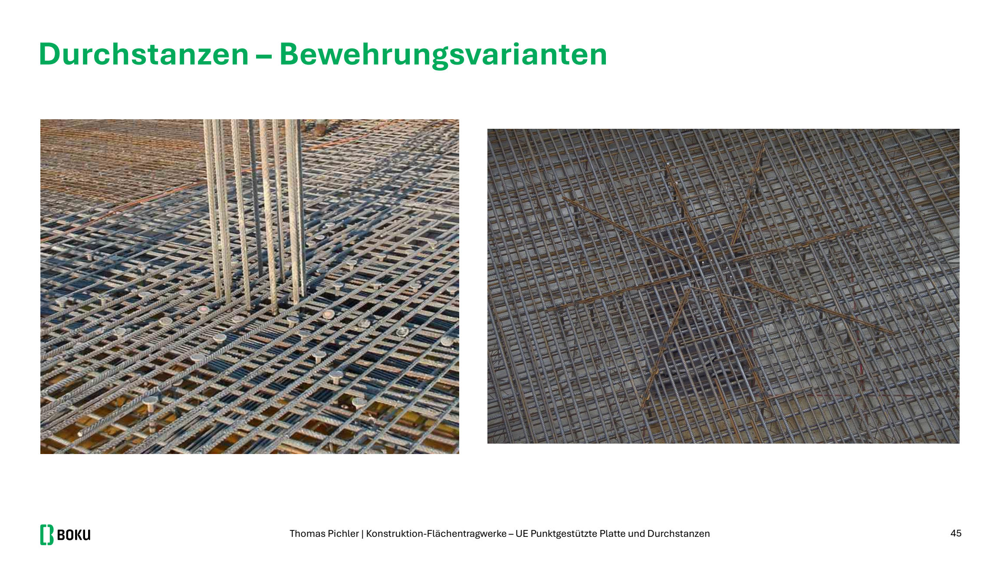

Zwei getrennte Aufgaben: Biegung über Feld- und Gurtstreifen, danach Durchstanzen am Rundschnitt. Wer die Stützenkraft aus der Biegung „wiederverwendet“, ohne Überstand, verliert die Rundschnittaufgabe.


Biegung — Näherung mit Streifen
System als Durchlaufträger in x und y (DLT-Tafeln), 1 m Streifen. Bei gleichen Achsabständen sind die Momente in beiden Richtungen gleich.
übliche DLT-Beiwerte in den Übungen
MF = 0,07 · qsd · l²
MSt = −0,125 · qsd · l²
Querverteilung auf Gurt- und Feldstreifen (Faktoren aus DLT-Tafel / Skript, z. B.):
Stütze: Gurt 1,4 / Feld 0,6 des Streifenmoments
Feld: Gurt 1,2 / Feld 0,8


Streifenbreiten oft 0,5·l Feld / 0,25·l Gurt je Seite — Skizze aus der Angabe. Bemessen in der Richtung mit dem größten |m|, mit dem kleineren d (zweite Lage).
Überschlag: as ≈ |m| / (fyd · 0,8 · h), dann μ–ω je Streifen. Mindestbewehrung wird in Feldstreifen oft maßgebend.
Stützenkräfte für Durchstanzen
Über Lasteinflussflächen, Überstand ü mitnehmen:

Innen: 1,1 lx · 1,1 ly · qsd
Rand: 1,1 l · (0,4 l + ü) · qsd (Faktor 0,375…0,4 je nach Tafel)
Ecke: (0,4 l + ü) · (0,4 l + ü) · qsd
β-Faktoren (Lastausmitte), in der Übung oft:
Innenstütze β = 1,15 Rand β = 1,4 Ecke β = 1,5
Kritischer Rundschnitt
Im Abstand 2d von der Stützenanschnittsfläche. Runde Stütze Durchmesser c:

u1 = π · (c + 4d) (innen, voller Ring)
Rand/Ecke: u1 nur der vorhandene Perimeter (offene Seiten abziehen)
vEd = β · VEd / (u1 · d)
Längsbewehrungsgrad im Rundschnitt aus der vorhandenen Biegebewehrung in x und y mitteln:
ρl = √(ρlx · ρly) ≤ 0,02
ρl,i = asi / (b · di) mit beff ≈ 0,25 der Stützenbreite je Seite nach ÖNORM B 1992-1-1
Nachweise — Reihenfolge
Maximale Querkraft am Stützenanschnitt
vEd am Umfang u0 gegen vRd,max. Wenn das nicht hält: Geometrie oder Beton ändern. Bügel lösen das nicht.
Betontraganteil am Rundschnitt u1
vRd,c = CRd,c · k · (100 ρl fck)1/3 · deff-Faktoren
CRd,c = 0,12 k = 1 + √(200/d) ≤ 2,0
vEd ≤ vRd,c → keine Durchstanzbewehrung. Sonst Pos. C.
Durchstanzbewehrung
Erforderliche Bügelfläche je Ring aus der Differenz vEd − vRd,c (Formel im Skript, sin α = 1 bei lotrechten Bügeln). Erster Ring: 0,3d bis 0,5d vom Stützenanschnitt, weiter bis der äußere Rundschnitt ohne Bügel hält. Bügel im Rundschnitt verankern. Mindestanzahl und Maximalabstand aus Skript (Übung: oft ≥ 12 Bügel am kritischen Umfang, a ≤ 0,75d radial, 1,5d tangential — Tafel prüfen).
Skizze: Grundriss (Ringe um S1) und Schnitt. Innenstütze, Rand und Ecke getrennt abhaken.

Beispiel — Innenstütze, l = 6 m, qsd = 18 kN/m²
Rundstütze c = 30 cm, h = 30 cm, d ≈ 26 cm, kein Überstand, C30/37.
Vsd,S1 = 1,1·6 · 1,1·6 · 18 = 783 kN
u1 = π (0,30 + 4·0,26) = π · 1,34 = 4,21 m
vEd = 1,15 · 783 / (4,21 · 0,26) = 900 / 1,095 ≈ 0,82 N/mm²
k = 1 + √(200/260) = 1,88
ρl aus der gewählten Biegebewehrung im Gurtstreifen über der Stütze. Liegt vEd über vRd,c, Bügelringe für S1 rechnen und skizzieren. S2 und S3 oft nur Kontrolle „Bewehrung erforderlich? ja/nein“.
Kindergarten-Prüfung: Überstand 0,5 m ändert Vsd (S1 wurde dort 855 kN). Momentenermittlung ohne Überstand, Durchstanzen mit Überstand.